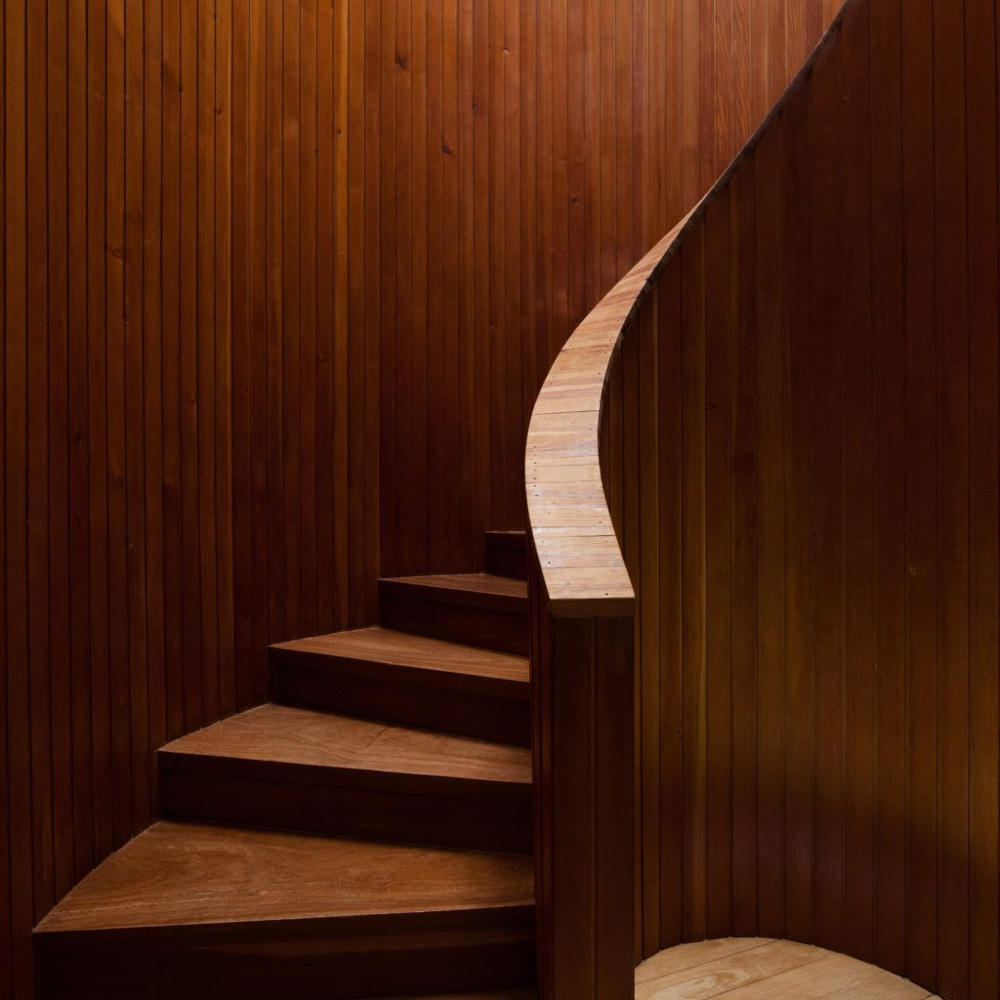

El uso más habitual de la madera de nogal es la fabricación de muebles de calidad, aunque también se emplea para en suelos o carpintería de interior, como pueden ser puertas, ventanas, frisos o molduras. Se puede emplear tanto en una pieza maciza como para rechapar algunas piezas que no pueden ser tan pesadas.
